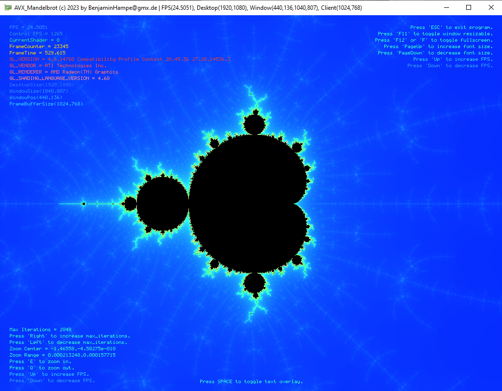
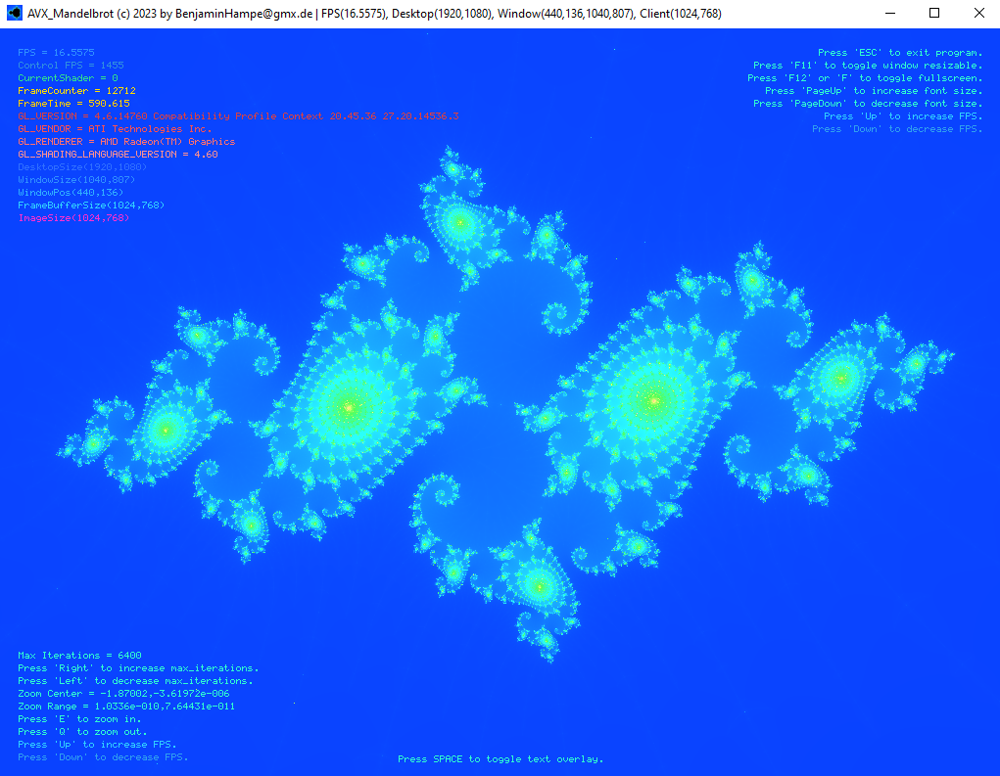

AVX Mandelbrot GLFW (C/C++, Desktop OpenGL, GLFW, GLAD, GLM, Font5x8) |
2023 |
| Renders Mandelbrot fractal using the CPU, GPU, AVX2 intrinsics and a ThreadPool with tasks. |
| Each task renders a rectangular region of an image, the image is then uploaded to GPU as 2D texture. |
| Uses hardware accelerated Desktop OpenGL on Windows64, no EGL or GLES dlls needed. |
The shaders rely on gl_VertexID ( kinda modern ), so i dont need any VAO, VBO or IBO to draw a screen quad. |
| In Release Static mode it produces single exe files, which is what i desired. |
| Offers easy to use events using another class IEventReceiver, which is platform independent. |
| I translate GLFW Keys to (platform and lib independent key) EKEY. So i will later be able to add Window classes for other operating systems |
- Uses AVX2 intrinsics and ThreadPool with tasks to get some performance
- Works better on my Surface Pro 4 with integrated GPU HD 515
- Has a bugfix for gl_VertexID which needs an VAO bound for rendering (even though VAO is empty). But that fix does not help the WGL/GLEW version to run on HD515 ( somehow ).
- Seems not starting sometimes (inf loop), just kill app then and try again.
- Desktop OpenGL 4.6 using GLFW Window
- GLAD ( loads all OpenGL and WGL commands).
- GLM ( used for shader uniforms and as compact params for functions ).
- Font5x8 ( Builtin font to draw text ).
- libz, libbzip2, libpng, libjpeg-8d, etc... used in libDeutschland
|
|
This is a fully standalone project that everybody can build without having to rely on find_package()
or what you have or have not installed on your system.
|
|
The tutorials should interest any Windows 3D graphics and multithreading programmer.
|
|
Projects does not need any media file (except the win icon). Aka minimal
|
Download: (full) Sources + Binaries |
 ./cpp_AVX_Mandelbrot_glfw.7z 2MB
./cpp_AVX_Mandelbrot_glfw.7z 2MB |
Download: free desktop wallpaper (1080p) |
|
./cpp_AVX_Mandelbrot_Wallpaper_1080p.png 2MB |
Download: free desktop wallpaper 2 (1080p) |
|
./cpp_AVX_Mandelbrot_Wallpaper2_1080p.png 2MB |
Screenshot: cpp_AVX_Mandelbrot_001.png |
|  |
Screenshot: cpp_AVX_Mandelbrot_002.png |
|
Screenshot: cpp_AVX_Mandelbrot_003.png |
|
Screenshot: cpp_AVX_Mandelbrot_004.png |
|
Screenshot: cpp_AVX_Mandelbrot_005.png |
|  |
Screenshot: cpp_AVX_Mandelbrot_006.png |
|
Screenshot: cpp_AVX_Mandelbrot_ThreadPoolDebugColoring.png |
|